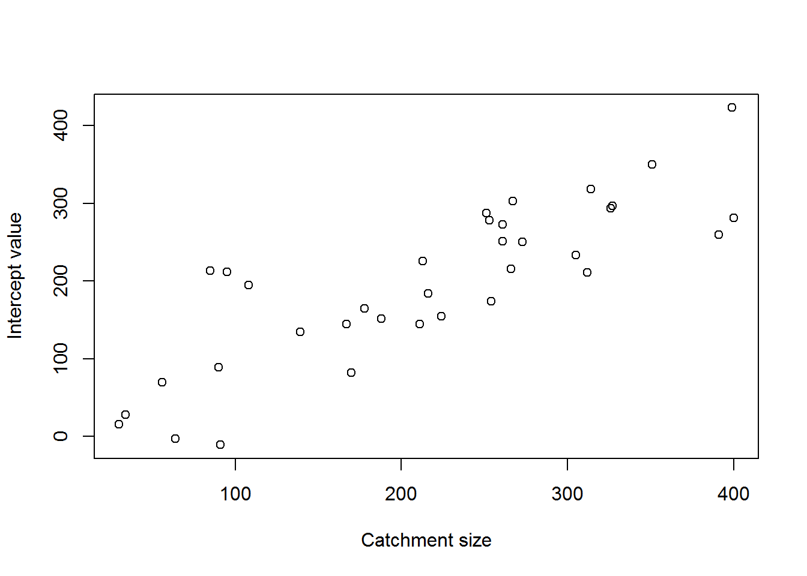
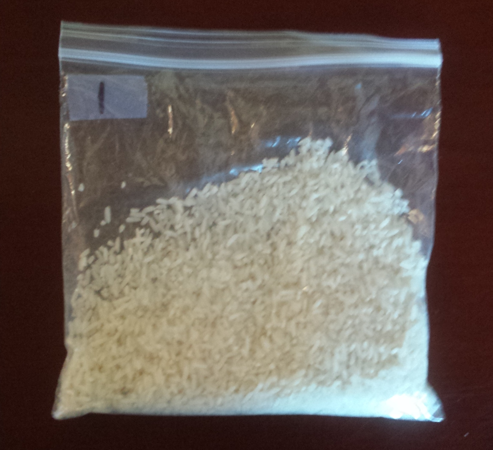

Finishing HLMs & estimating occupancy
1 Class 15 preliminaries
1.1 Housekeeping
- Dr. Mark Woodrey
- Guest speaker-last 10 minutes of class
- Application of Structured Decision Making to the Development of a Gulf of Mexico-wide Bird Monitoring Program March 10th at 11 am. Tully Auditorium.
- Supplemental background reading(s):
- Powell and Gale. Chapter 15: Occupancy Modeling here
- Welsh, A. H., D. B. Lindenmayer, and C. F. Donnelly. 2013. Fitting and Interpreting Occupancy Models. Plos One 8:e52015.[pdfs/W202.pdf]
- Guillera-Arroita, G., J. J. Lahoz-Monfort, D. I. MacKenzie, B. A. Wintle, and M. A. McCarthy. 2014. Ignoring Imperfect Detection in Biological Surveys Is Dangerous: A Response to ‘Fitting and Interpreting Occupancy Models’. Plos One 9:e99571.[pdfs/G140.pdf]
- Welsh, A. H., D. B. Lindenmayer, and C. F. Donnelly. 2015. Adjusting for One Issue while Ignoring Others Can Make Things Worse. Plos One 10:e0120817. [pdfs/W203.pdf]
- Assignment due: None
- Class project: Think about decision model (objectives, nodes, utilities)
- Link to class recording YouTube
- Today’s R script Class-15.R
1.2 Class overview & objectives
This will be the last class the deals with predicting an outcome as a result of some inputs using a general or generalized linear model.
By the end of this class you should be able to:
- Account for hierarchical dependence in linear model
- Use upper level predictors in a hierarchical linear model.
1.3 Preliminaries
- The R scipt for class can be found here
- Once you have the script where you want it it where you want open the R script and be sure to check the working directory
getwd()and make sure it is where your folder is. - If your working directory is not correct, you can set it in Rstudio: “Session –> Set Working Directory –> To source file location”. Or you can use the
setwd()in the console.
2 HLMs continued
2.1 Random intercept and slopes
Another instance we commonly run into is where we may have random intercepts and slopes. In other words we have heterogeneous intercepts and slopes. What does that remind you of? Well if you were thinking an about an interaction then, winner winner chicken dinner. However when we have many groups the number of parameters we estimate can quickly become numerous if we treat them as fixed effects. Additionally, it precludes us from making predictions beyond the groups in the model. However, random effects clears that up.
Let’s get some data rolling for a model that formally looks like this:
\[\mu_{i,j} = \beta_{0,j} + \beta_{1,j} \cdot X \]
and
\[\beta_{0,j} = \gamma + \epsilon\] where
and
\[\beta_{1,j} = \delta + \tau\]
where
\[ \epsilon \sim Normal (0, \sigma_{\beta{0}})\],
\[ \tau \sim Normal (0, \sigma_{\beta{1}})\], and
\[Y_{i,j}\sim Normal(\mu_{i,j},\sigma)\].
The parameters in the equations above are:
Fixed effects:
- \(\beta_{0,j}\) is the group specific intercept
- \(\beta_{1,j}\) is the group specific effect of \(X\)
- \(\gamma\) is population mean intercept
- \(\delta\) is the population mean slope
Random effects:
- \(\sigma_{\beta{0}}\) is the standard deviation of group specific intercepts
- \(\sigma_{\beta{1}}\) is the standard deviation of group specific slopes
- \(\sigma\) is the standard deviation of the residuals
Whoziers, 3 random effects, pulling a hat trick.
Data and predictions:
- \(\mu_{i,j}\)$ the expected outcome
- \(Y_{i,j}\) is the observed data
Indexes:
- \(i\) indexes observations
- \(j\) indexes groups
Let’s get this party started and build on our last dataset to get this beast rolling.
The code is the same as the heterogeneous intercept model.
Step 1 generate \(\beta_0\) and \(\beta_1\) and random effects.
set.seed(8675309)
ngroups=50
beta0<- 10
beta0<- beta0+rnorm(ngroups,0,20) # random effect of group
beta1<- 0.95
beta1<- beta1+rnorm(ngroups,0,1.3) # random effect of groupNow we can put them in a dataset to calculate predictions.
dat<- data.frame(
beta0 = rep(beta0,30),
beta1= rep(beta1, 30),
group=rep(c(1:ngroups),30),
x=runif(ngroups*30,10,50))
dat$group<- as.factor(dat$group)And make our baseline predicted outcomes.
dat$obs<- dat$beta0+ dat$beta1*dat$xOk now let’s gin up some random effects, 50*30 to be exact, one for each observation and add them to our baseline predicted outcomes. The \(\sigma\) for this random effect is equal to 1.
dat$obs<- rnorm(ngroups*30,dat$obs,50)Just like the intercepts only but now we have a random effect around \(\beta_1\).
library(lattice) # need for xypot
xyplot(obs~x,
data=dat,
group=group)
That data looks good but messy! But thats where this gets fun. Uncertainty galore, uncertain outcomes, what is a decision maker to do but be in for a world of hurt? Nah, we can fit the model we described above.
library(lme4)
fit<- lmer(obs~x + (1+x|group), dat)
summary(fit)## Linear mixed model fit by REML ['lmerMod']
## Formula: obs ~ x + (1 + x | group)
## Data: dat
##
## REML criterion at convergence: 16235.6
##
## Scaled residuals:
## Min 1Q Median 3Q Max
## -3.8152 -0.7037 0.0058 0.6877 3.4316
##
## Random effects:
## Groups Name Variance Std.Dev. Corr
## group (Intercept) 192.87 13.888
## x 1.47 1.212 0.22
## Residual 2642.56 51.406
## Number of obs: 1500, groups: group, 50
##
## Fixed effects:
## Estimate Std. Error t value
## (Intercept) 12.3809 4.1719 2.968
## x 0.9595 0.2071 4.633
##
## Correlation of Fixed Effects:
## (Intr)
## x -0.376Our estimates of the random effects are legit close to the values we fed the simulated data. And the fixed effects are close!
But what does it all mean? Well there is lots of uncertainty as we saw in the plot some groups go up some go down which makes for a difficult time of predicting outcomes with any certainty.
What if we could predict the random effects using a group level variable? Yes, Yes you can…
2.2 Predicting random effects
Here we have a dataset with heterogeneous intercepts but for simplicity the the slopes will be homogeneous. This type of data might arise with hierarchically structured data, which I commonly encounter in streams. Specifically streams are nested within watershed. Suppose in this case we have a response variable where we have multiple observations within a watershed and there are 35 watersheds with data. The catchment size of the watershed vary and can be used to predict the intercept of watershed specific intercepts. Formally we are looking at a model defined as:
\[\mu_{i,j} = \beta_{0,j} + \beta_{1} \cdot X \]
and
\[\beta_{0,j} = \gamma + \nu \cdot \text{Catchment Size} + \epsilon\]
where
\[ \epsilon \sim Normal (0, \sigma_{\beta{0}})\]
and
\[Y_{i,j}\sim Normal(\mu_{i,j},\sigma)\]
The key is in the middle where we are now predicting \(\beta_{0,j}\) using a linear model!
Ok let’s simulate a dataset to verify our understanding.
nwatersheds<- 35
# A WATERSHED LEVEL COVARIATE
catchmentSize<- c(213,91,326,30,267,
216,178,167,251,261,139,400,399,
56,261,34,90,108,224,312,85,64,
254,188,266,95,391,327,351,314,
211,305,170,273,253)Now lets specify \(\gamma\) and \(\nu\) for the wateshed level equation.
beta0_ws<- 5
beta1_ws<- 0.8Now we can add the random effect (\(\epsilon\) to the intercept where the random effect is normally distributed with mean 0 and a standard deviation of 55.
beta0<- beta0_ws +beta1_ws*catchmentSize + rnorm(nwatersheds,0,55)Let’s see what the intercepts look like.
plot(catchmentSize,beta0,
xlab="Catchment size",
ylab="Intercept value")
Suppose there are 80 sites within each watershed. We can cobble together the predictors now.
withinsites<- 80
dat<- data.frame(
beta0 = rep(beta0,withinsites),
beta1= -3.6,
group=rep(c(1:nwatersheds),withinsites),
catchmentSize=rep(catchmentSize,withinsites),
x=runif(nwatersheds*withinsites,10,50))
dat$group<- as.factor(dat$group)And generate the predictions
dat$y<- dat$beta0 + dat$beta1*dat$xand layer on the last bit of uncertainty
dat$obs<- rnorm(nrow(dat),dat$y,15)Let’s look at the mess we created.
xyplot(obs~x,
data=dat,
xlab="Catchment size",
ylab="Intercept value",
group=group) Now we can use the
Now we can use the lmer() to fit the model. The key here is that we include catchmentSize as a predictor in the model and because we specified heterogeneous intercepts and the catchment values are structured by group it ends up predicting \(\nu\).
fit<- lmer(obs~x+ catchmentSize + (1|group) , dat)
summary(fit)## Linear mixed model fit by REML ['lmerMod']
## Formula: obs ~ x + catchmentSize + (1 | group)
## Data: dat
##
## REML criterion at convergence: 23337.2
##
## Scaled residuals:
## Min 1Q Median 3Q Max
## -3.5497 -0.6585 -0.0082 0.6656 2.9729
##
## Random effects:
## Groups Name Variance Std.Dev.
## group (Intercept) 3308.5 57.52
## Residual 223.3 14.94
## Number of obs: 2800, groups: group, 35
##
## Fixed effects:
## Estimate Std. Error t value
## (Intercept) 24.13267 22.23554 1.09
## x -3.60441 0.02484 -145.08
## catchmentSize 0.80106 0.09239 8.67
##
## Correlation of Fixed Effects:
## (Intr) x
## x -0.033
## catchmentSz -0.899 0.000Oh boy, it worked.
fixef(fit)## (Intercept) x catchmentSize
## 24.1326734 -3.6044067 0.8010562Those are pretty close to the values we used!
The intercept is a bit off, but what do you expect we put a big chunk of uncertainty around it, \(\sigma\)=55 as I recall.
3 Estimating Current States-Occupancy
3.1 Background
Suppose you are out in the field at a specific location (note-occupancy makes inference about the site being occupied or not) and you repeated sample that site for a critter. It is likely you do not perfectly detect that critter if it is there, but you can detect it with some probability. Lets assume you can perfectly detect the critter then the detection history would be 1111 if you went out on 4 occasions. If you have imperfect detection, let’s define detection probability as \(p\), then there is some probability you might miss detecting the critter even if it is there. Now that brings up a the foundation of occupancy analysis, you can miss a critter for 2 reasons: 1) that critter was not there to begin with (i.e., was not occupying the site) or 2) the critter was there (i.e., was occupying the site) but you did not detect it. These 2 sources of 0s in a detection history can either be a true negative (reason 1 above) or a false negative (reason 2 above).
3.2 Probability of a site being occupied
In this context, occupancy as we observe it, is a 0 or 1. However as we think about occupancy or try to model occupancy it is done as a probability. Lets define the probability of a site being occupied as \(\psi\). Let’s assume that we can detect our critter perfectly and \(p = 1\). Now, if we have a \(\psi = 0.35\), the probability of site not being occupied is \(1=\psi\) or 1-0.35 = 0.65. Recall that occupancy is site or habitat specific and therefore the true site occupancy status (0 or 1) and therefore occupancy for 10 sites might be 111000000 for 10 sites given a \(\psi = 0.35\). We can actually simulate this easily in r. Suppose there are potential 3000 sites to sample in a large tract of land (i.e., the sampling domain). But we can only sample 35 of those sites due to budget limitations. Lets simulate this to see how things play out
3.3 Corn in a rice field
The graphic below illustrates a situation where it may be hard to detect an occurrence. Specifically there is a popcorn kernel in the bag of rice. We will work through an exercise to generate some data and estimate occupancy.

#install.packages("unmarked")
library(unmarked)## Warning: package 'unmarked' was built under R version 3.1.3## Loading required package: reshape##
## Attaching package: 'reshape'## The following object is masked from 'package:Matrix':
##
## expand## Loading required package: Rcpp## Warning: package 'Rcpp' was built under R version 3.1.3##
## Attaching package: 'unmarked'## The following object is masked from 'package:lme4':
##
## ranefNow we need to get our detections into a matrix for unmarked. In this example we don’t have any covariates so the siteCovs and the obsCovs are set to NULL.
#detections<- matrix(c(),nrow=6, ncol=???)
#detections<- unmarkedFrameOccu(detections, siteCovs=NULL, obsCovs=NULL)
#detectionsNow we can use the occu() function to estimate occupancy
#fit <- occu(~ 1 ~ 1, detections)
#fit
#backTransform(fit, type="state")
#backTransform(fit, type="det")